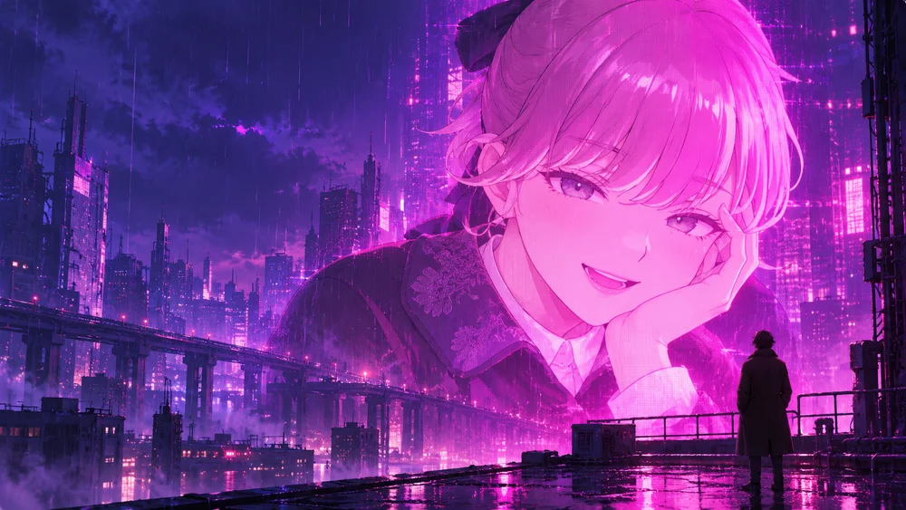

✳A VIRTUAL PRESENCE. A REAL CONVERSATION.
A voice in
the neon.
Somewhere between your world and hers.
Meet Lapwing — an AI virtual streamer
with a moment just for you.
Your browser. Your mic. About 3 minutes.
Come for the curiosity.
Stay for the conversation.
A passing thought. A strange question. Something that made you laugh today. Bring it with you. Lapwing is an AI character you can actually talk to, right in your browser.
See how it feels↘No grand entrance.
Just a hello.
You don’t need the perfect opening line.
Here’s all there is to it.
01Find your way in.
Hit “Start a conversation” to open the voice room. Allow microphone access there when you’re ready. No app, no setup ritual — just a browser tab.
Enter the voice room02Let the conversation wander.
Say what’s on your mind. You can speak while Lapwing is talking and jump in mid-sentence. There’s no need to wait for a turn or press a button for every reply.
TALK · LISTEN · INTERRUPT · REPEAT03Leave a little lighter.
Stay for a short chat, then carry on with your day. Every session starts fresh: Lapwing won’t remember your previous conversations. Come back with a new hello whenever you like.
A SHORT VISIT. A FRESH START.
“Hey, what’s on
your mind?”
Same little universe.
More ways to be here.
Stay for the stream. Find your people.
Or just drop by to see what’s new.
An AI character, a shared space. Be kind to the humans here. Lapwing is entertainment, and every conversation begins with a clean slate.